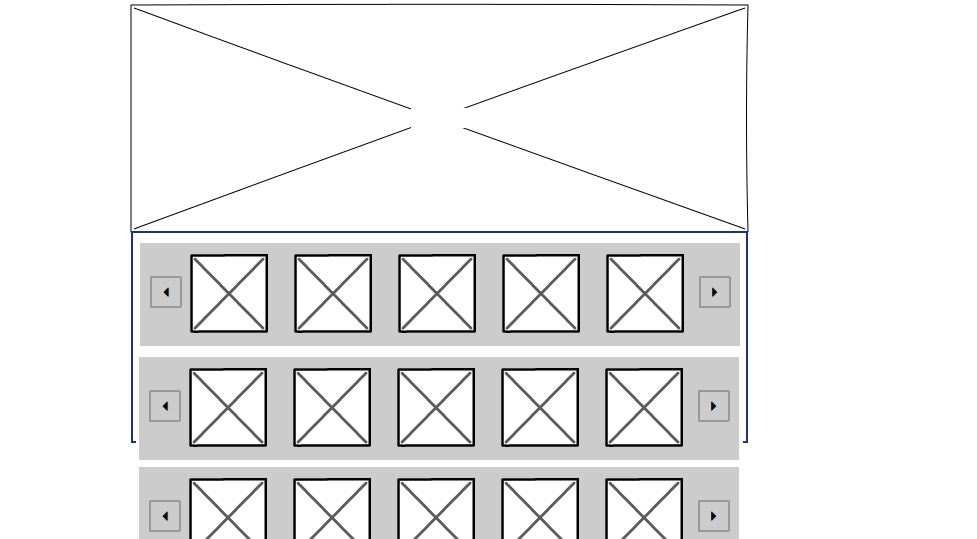
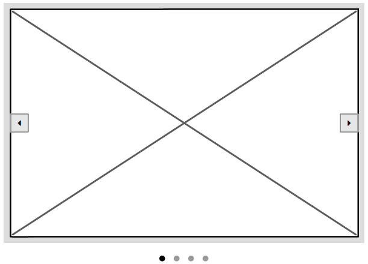
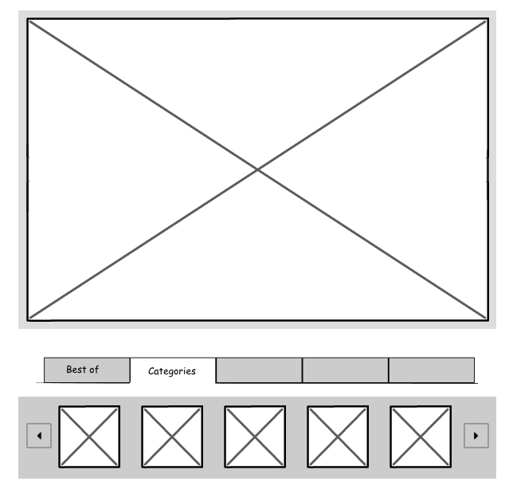
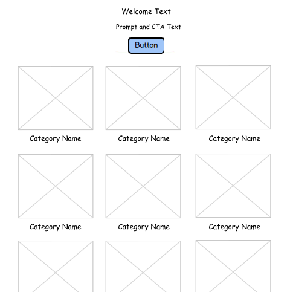
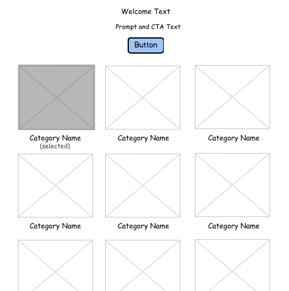
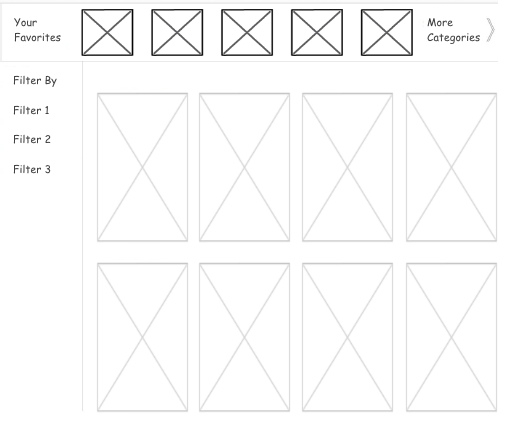

Kindle Content Design Intern @ Amazon
User research and exploratory design.
- User Research Low Fidelity Mockups Prototyping
In the Summer of 2015, I was a Design Intern at Amazon. I was assigned to the Kindle Content Design team and was tasked with
studying and redesigning the Kindle Unlimited web experience.
Brief.
It’s hard to find books on Kindle Unlimited web. 
Understanding The Problem
The only evidence that existed was anecdotal. So, I had to adopt a scrappy approach to get data to understand the problem. I started off doing a competitive analysis on competitors, Scribd & Oyster Books.
Conducting My Own Research
I worked with my manager, other designers and the product manager to get a better perspective. I found out from the product manager that no qualitative research had been carried out and incorporated his suggestions in my research. Using their feedback, I created and pitched a research plan for remote usability testing to the design team. The main goal of the proposal was to find discoverability issues on Kindle Unlimited. After a few iterations, the plan was approved. This was my first time executing on a research plan (!) so I reached out to independent researchers within Amazon and sought advice. I carried out remote usability tests as part of the plan.
I ended up creating an affinity diagram to identify common themes from the research data.The main points of interest were around the way people look for books, content filtering, recommendations and personalization.

Documentation
I presented my research to the entire design team around the mid point of my internship. I was asked to document everything and create a research document that the team could use even after my internship.
Work
Unfortunately I can't share my work online but I can show it in person.
I then worked on exploratory designs for some of my ideas. I regularly sought feedback from my design mentor and the product manager I was working with. I became interested in Framer during this time and got in touch with a Sr. Amazon Designer to organize a training for my fellow interns.
I identified short term fixes as well as long term solutions. I built a case for each recommendation using quantitative data from Amazon's internal web analytics. I also observed other areas of the experience like search, wishlist and new content discovery.
Conflict
I designed explorations for the Kindle Unlimited storefront including the landing page and the sign up page. While doing this, I encountered and understood the conflict that can arise between business needs and user needs. These are the wireframes for some ideas that didn't work.

New Ideas
I also came up with brand new designs for an onboarding process and a curatorial section for featuring books. I also pitched a new feature to the product manager that might benefit the entire store and book selling experience.

Unfortunately, I had an accident and broke my right arm towards the end of my internship. I had to undergo surgery but I still managed to finish and present my work. In the words of my manager, I showed "bias for action" and "customer obsession". I took "ownership" and "dove deep."
Learning
Design is an intentional but chaotic and often messy process. Especially, when you are working within the constraints of a complex technical ecosystem. But I loved every second of it.
I learned how to work well with different members of the organization. Collaboration with teams of designers, researchers, engineers, and product managers throughout the design process while also thinking about and advocating for the user is key to meaningful design.
Prev Close Next